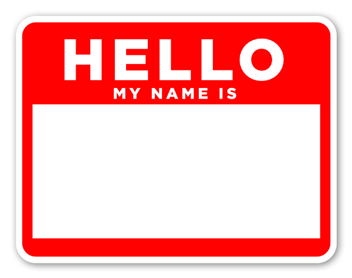

Lab 7: Functions
Challenges
I had some Challenges with converting what we had today in class to not use the parameter, but then realized that I can just complete one of the Bonus tasks with not adapting it and just asking it outside the function.
Results
I was able to get my HTML File looking nice aswell as my JavaScript printing on here in the 'Script Output'.